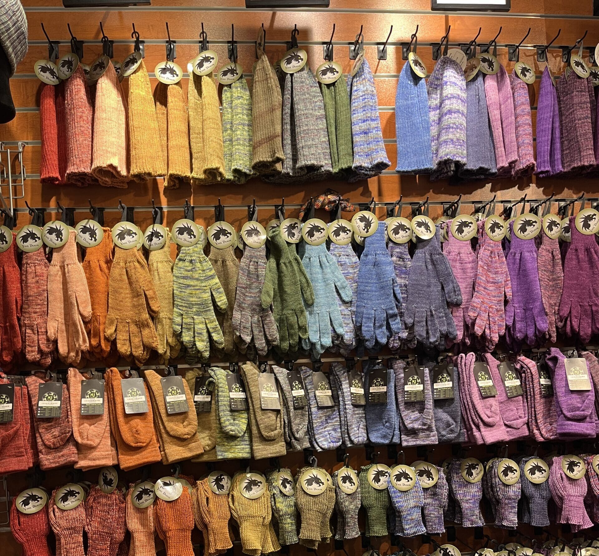
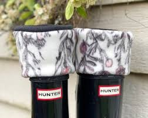
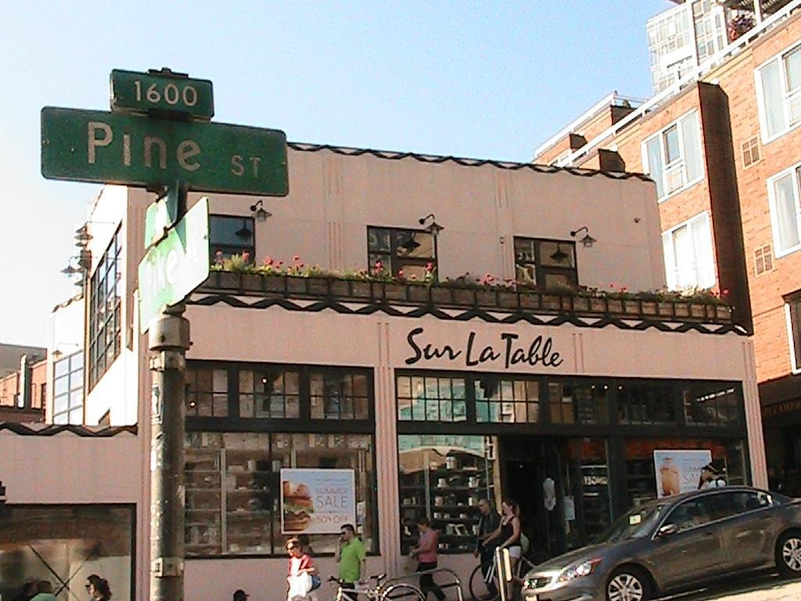
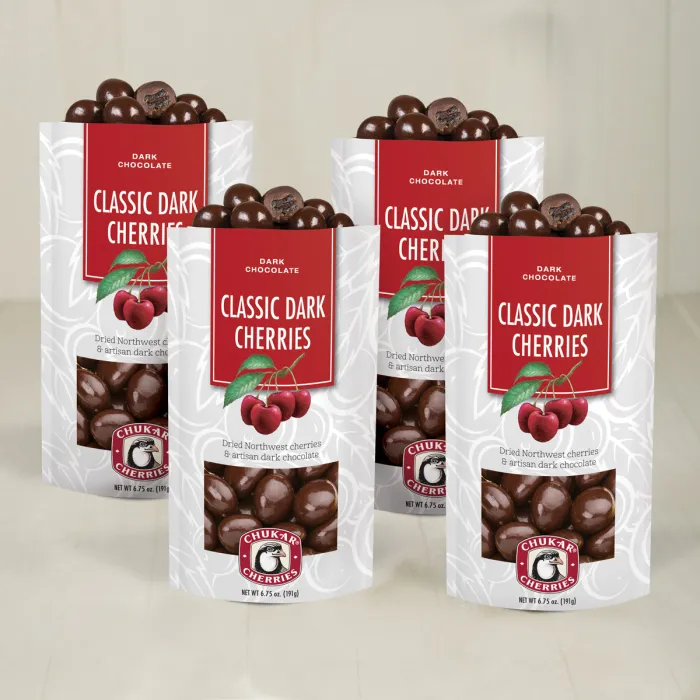

Yarn Dragon

Yarn Dragon
Features eco-sustainable knitwear, tools, and fiber art by Jonathan Berner.
WithTheRain

WithTheRain
Pick up colorful fleece boot liner from Native-owned
Sur La Table

Sur La Table
Brims with stylish and practical kitchen goods.
Chukar Cherries

Chukar Cherries
Washington grown Bing and Rainier cherries star in the jams, granola, and chocolates.